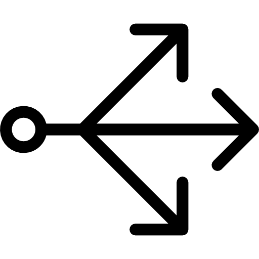
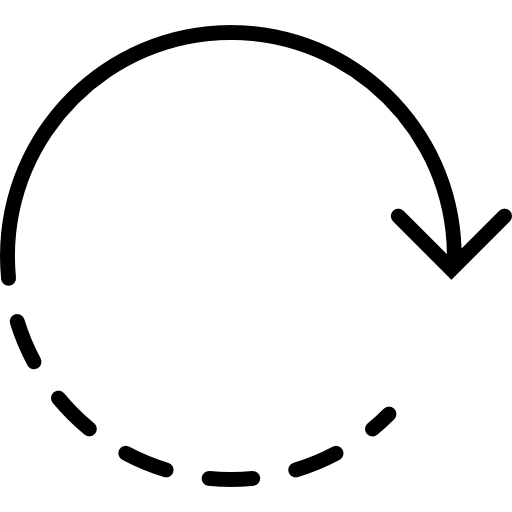
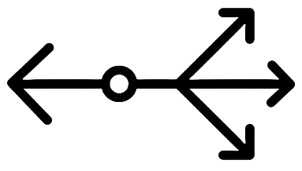

<div class="mapaProceso">
    <div class="titulo-central">
        <h1>Mapa Proceso ISO 9001:2015</h1>
    </div>
    <div class="containermenu">
        <div class="left-titles containerr">
            <h2>Organización y su contexto</h2>
            <h2>Requisitos del cliente</h2>
            <h2>Necesidades y expectativas de las partes interesadas pertinentes</h2>
            <div class="arrow-container9">
                
            </div>
        </div>
        <div class="circle">
            <div class="letras_up">
                <span class="letras l-p">P</span>
                <span class="letras l-h">H</span>
            </div>
            <div class="letras_down">
                <span class="letras l-a">A</span>
                <span class="letras l-v">V</span>
            </div>
            <div class="boton-arriba">
                <a href="#" class="button b1" id="modalButton">Apoyo    y    Operaciones</a>
            </div>
            <div class="arrow-container1">
                
            </div>
            <div class="arrow-container5">
                
            </div>
            <div class="arrow-container6">
                
            </div>
            <div class="arrow-container7">
                
            </div>
            <div class="arrow-container8">
                
            </div>
            <div class="boton-enmedio">
                <a href="#" class="button b2">Planificación</a>
                <a href="#" class="button b3">Liderazgo</a>
                <a href="/home/MapadeProcesos/gestion_de_calidad" class="button b4">Evaluación del Desempeño</a>
            </div>
            <div class="boton-abajo">
                <a href="#" class="button b5">Mejora</a>
            </div>
            <div class="arrow-container10">
                
            </div>
        </div>
        <div class="right-titles containerr">
        <h2>Satisfacción del Cliente</h2>
        <h2>Resultados del SGC</h2>
        <h2>Proyectos y Servicios</h2>
        </div>
    </div>
</div>
<div id="modal" class="modal">
    <div class="modal-content">
        <span class="close">&times;</span>
        <div class="titulo-centrado">
            <h1>Apoyo</h1>
        </div>
        <div class="apoyo">
            <ul>
                <li>
                    <a class="boton_a" href="/home/MapadeProcesos/rrhh">Recursos Humanos</a>
                </li>
                <li>
                    <a class="boton_a" href="/home/MapadeProcesos/infraestructura_y_equipo" >Infraestructura y Equipo</a>
                </li>
                <li>
                    <a class="boton_a" href="/home/MapadeProcesos/informatica">Informática y Tecnología</a>
                </li>
            </ul>
        </div>
        <div class="titulo-centrado">
            <h1>Operación</h1>
        </div>
        <div class="operacion">
            <ul>
                <fieldset class="fieldset5050">
                    <legend>Abastecimiento</legend>
                    <li class="separado">
                        <a href="/home/MapadeProcesos/operaciones">Operaciones</a>
                        <a href="/home/MapadeProcesos/compras">Compras</a>
                        <a href="/home/MapadeProcesos/bmp">BMP</a>
                        <a href="/home/MapadeProcesos/bpt">BPT</a>
                    </li>
                </fieldset> 
                <li class="separado">
                    <a href="#">Registros</a>
                    <a href="#">I&D</a>
                    <a href="/home/MapadeProcesos/mercadeo">Mercadeo</a>
                    <a href="/home/MapadeProcesos/produccion">Producción</a>
                </li>
                <li>
                    <a href="/home/MapadeProcesos/aseguramiento">Aseguramiento de Calidad (Microbiología - Control de Calidad - Investigación & Desarrollo - Validación Métodos - Validaciones Procesos)</a>
                </li>
                <fieldset class="fieldset5050">
                    <legend>Gestión Comercial</legend>
                    <li class="separado">
                        <a href="/home/MapadeProcesos/ventas_farma">Venta Farma</a>
                        <a href="/home/MapadeProcesos/hospitalaria">Hospitalaria</a>
                        <a href="/home/MapadeProcesos/division_maquila">División Maquila</a>
                        <a href="/home/MapadeProcesos/exportaciones">Exportaciones</a>
                        <a href="/home/MapadeProcesos/gb">GB</a>
                        <a href="/home/MapadeProcesos/heel">Heel</a>
                    </li>
                </fieldset>
                <fieldset class="fieldset5050">
                    <legend>Finanzas</legend>
                    <li class="separado">
                        <a href="/home/MapadeProcesos/finanzas">Finanzas</a>
                        <a href="/home/MapadeProcesos/creditos">Créditos y Cobros</a>
                        <a href="/home/MapadeProcesos/contabilidad">Contabilidad</a>
                        <a href="/home/MapadeProcesos/costos">Costos</a>
                    </li>
                </fieldset>
            </ul>
        </div>
    </div>
</div>
